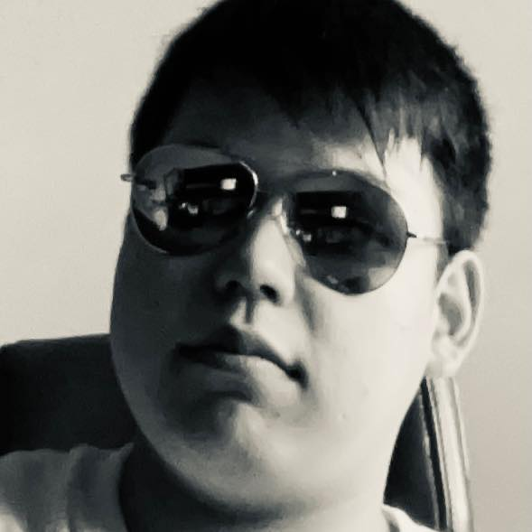

- 
国田 達也
くにだ たつや
2001年生まれ、高知県出身。
趣味は食べ歩きと映画鑑賞。
2022年、神戸電子専門学校でC＋＋およびUnityでのゲーム開発技術を学び卒業。
BtoBのWebシステム・アプリケーションを開発する会社にプログラマーとして入社し、PHPとSQLでのECサイト作りを経験した後に退職。
現在は自分にとって「やりがい」のある仕事ができる会社で働くという目標のもと、努力しております。
資格はC言語プログラミング認定試験 2級を所持。年内でのITパスポートなどの資格取得を目指しています。
また、ゲーム開発の分野では神戸電子専門学校内のコンテストである「DigitalWorks」において、
2年次の分野で製作したチーム作品が前期、後期ともに受賞した経験もございます。
BtoBのWebシステム・アプリケーションを開発する会社にプログラマーとして入社し、PHPとSQLでのECサイト作りを経験した後に退職。
現在は自分にとって「やりがい」のある仕事ができる会社で働くという目標のもと、努力しております。
資格はC言語プログラミング認定試験 2級を所持。年内でのITパスポートなどの資格取得を目指しています。
また、ゲーム開発の分野では神戸電子専門学校内のコンテストである「DigitalWorks」において、
2年次の分野で製作したチーム作品が前期、後期ともに受賞した経験もございます。